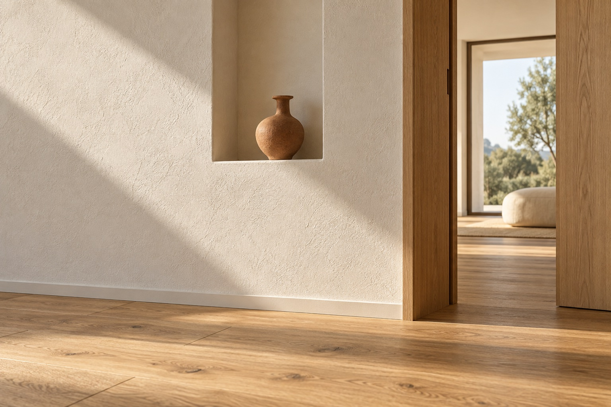

Garage & Keller
Belastung, Feuchtigkeit und der Zustand des Untergrunds beeinflussen die Auswahl. Wir prüfen gemeinsam, welche Beschichtung für Ihre Flächen infrage kommt.
MEL MALER · BODENBESCHICHTUNGEN
Garagen, Keller und Gewerberäume brauchen Oberflächen, die ihrer Nutzung gerecht werden. Wir besprechen die passende Bodenbeschichtung für Ihr Vorhaben.
Bodenbeschichtungen anfragen ↗
WAS WIR FÜR SIE TUN
Wir stimmen die Arbeiten auf Ihre Räume, Ihre Wünsche und die Gegebenheiten vor Ort ab.
Belastung, Feuchtigkeit und der Zustand des Untergrunds beeinflussen die Auswahl. Wir prüfen gemeinsam, welche Beschichtung für Ihre Flächen infrage kommt.
Wo Böden regelmäßig beansprucht werden, zählen passende Materialeigenschaften. Nutzung, Reinigung und notwendige Standzeiten werden vorab besprochen.
Für eine Beschichtung ist der Untergrund besonders wichtig. Erforderliche Vorarbeiten und der geeignete Aufbau werden vor der Ausführung abgestimmt.
Illustrative Gestaltungsidee. Farben wirken je nach Licht und Bildschirm unterschiedlich.
NUTZUNG & OBERFLÄCHE
Werkzeug, Fahrzeuge oder täglicher Betrieb: Die Nutzung entscheidet, was eine Oberfläche leisten soll. Wir besprechen Belastung, Reinigung und den passenden Aufbau.
GUT VORBEREITET
Nennen Sie uns Fläche, Nutzung und vorhandenen Untergrund. Fotos von Rissen, Flecken oder feuchten Stellen sind für das erste Gespräch besonders hilfreich.
Den genauen Umfang und die Kosten klären wir nach der Besprechung Ihres Vorhabens. Sie müssen zum ersten Kontakt noch nicht alle Details kennen.
Vorhaben besprechen ↗HÄUFIGE FRAGEN
Das kann möglich sein. Zunächst müssen unter anderem Zustand, Feuchtigkeit und vorhandene Beschichtungen geprüft werden. Daraus ergibt sich die notwendige Vorbereitung.
Das richtet sich nach dem verwendeten System und den Bedingungen vor Ort. Begehbarkeit und volle Belastbarkeit können zu unterschiedlichen Zeitpunkten erreicht sein.
Anforderungen an die Rutschhemmung werden bei der Planung besprochen. Die Auswahl richtet sich nach dem Einsatzbereich und dem passenden Beschichtungssystem.
DER NÄCHSTE SCHRITT